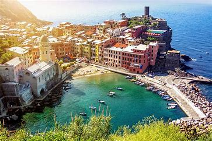
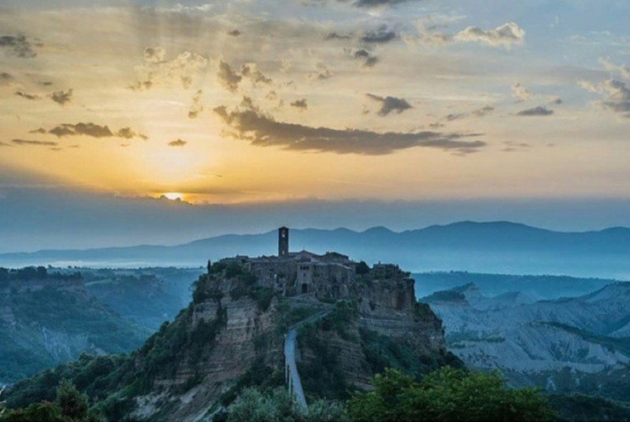

ヴェネツィア
べネト州の州都ヴェネツィアは、アドリア海に浮かぶ港湾都市。ラグーナと呼ばれる潟の上に小さな島々が集まって形成された都市、「水の都」。約122の島を約400の橋で結んだ市街地には、サン・マルコ大聖堂などの歴史的建造物があり、街の中央にはカナル・グランデ（大運河）が流れる。

チンクエ・テッレ
険しい海岸に色とりどりの家屋が並ぶ文化的景観によって知られており、ポルトヴェーネレや小島郡などと共にユネスコの世界遺産に登録されている。また、チンクエ・テッレはワインの生産地としても知られている。

チヴィタ・ディ・バニョレージョ
2500年以上前にエトルリア人によって作られた都市であるが、度重なる地震や雨風の浸食による、台地辺縁部の崩落でその上の建物が崩れる危機に常にさらされている。近い将来自然消滅するのではと言われ、自らを「死にゆく街」と称している。